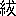

易に關する疑問は古くは宋の歐陽修に易童子問の著あり、我邦に於ても伊藤東涯などからして新らしく研究する學者があつて、最近には我が本田成之君が、本誌上に於て作易年代考を發表せられた。それらの人々の研究は何れも皆有益なものであるが、予は其以外に近頃多少考へ得た所があり、且易の成立つ由來に就いても考へ得た所があるから、茲に其大略を述べて吾黨の士の批評を得たいと思ふ。
抑も易に就いて歐陽修や伊藤東涯の尤も疑問とした所は十翼が孔子の作でないといふことで、殊に歐陽修が十翼を以て一人の手に成つたものでないとしたのは卓見と稱すべきである。朱子の語類にも、彖辭極精、分明是聖人所作、といつて居るから、彖辭以外が聖人の作でないと考へたとも言ひ得るのである。而してこれらのことは今日では必ずしも其意見の當否を再び吟味する必要はない程、分明なことであるが、歐陽修や伊藤東涯の已に注意した以外のことで予の少しばかり氣付いた所を擧げるならば、即ち十翼の中で比較的古いものと考へられてゐる彖傳象傳などの中に既に經文の原意を失つて特別な解釋を下したものゝあることである。尤もこれらのことは原則としては朱子なども夙に氣付いてゐたので、語類の中に、孔子之易非文王之易、文王之易非伏犧之易、伊川易傳又自是程氏之易也、と述べてゐる。但予の特に氣付いたのは、例へば大畜の卦の中で九三の爻には良馬の語あり、六四の爻には童牛之
 の語あり、六五の爻には※［＃「豕＋賁」、38-14］豕之牙の語があつて、此卦は元來獸畜の意味であつたに相違ないのであるが、それを大象には、君子以多識前言往行、以畜其徳、とあつて、畜を養ふと解してゐるが如き、是れ明かに象傳の解釋が經文の原意と一致しないのである。又革卦に於て初九に黄牛之革といひ、九五、上六に、大人虎變、君子豹變といふ辭のあるのは、明らかに皮革の革の義であるらしく見えるが、彖傳では天地革而四時成、湯武革命などゝいひ、象傳で治暦明時の義に解釋するのは、いづれも元來の意義でないやうに考へられる。又伊藤東涯は繋辭の中に包犧神農などを説いてゐることが、中庸の祖述堯舜、憲章文武の意味と合はないと述べてゐるが、一體上古帝王を數へるのに呂氏春秋尊師篇には神農、黄帝、
の語あり、六五の爻には※［＃「豕＋賁」、38-14］豕之牙の語があつて、此卦は元來獸畜の意味であつたに相違ないのであるが、それを大象には、君子以多識前言往行、以畜其徳、とあつて、畜を養ふと解してゐるが如き、是れ明かに象傳の解釋が經文の原意と一致しないのである。又革卦に於て初九に黄牛之革といひ、九五、上六に、大人虎變、君子豹變といふ辭のあるのは、明らかに皮革の革の義であるらしく見えるが、彖傳では天地革而四時成、湯武革命などゝいひ、象傳で治暦明時の義に解釋するのは、いづれも元來の意義でないやうに考へられる。又伊藤東涯は繋辭の中に包犧神農などを説いてゐることが、中庸の祖述堯舜、憲章文武の意味と合はないと述べてゐるが、一體上古帝王を數へるのに呂氏春秋尊師篇には神農、黄帝、
 、帝
、帝 、堯、舜といふ順序になつてゐるから、繋辭傳に其上更に包犧を數へてゐるが如き、大體繋辭傳が呂氏春秋より新らしいものなることを想はしめるのである。元來呂氏春秋と繋辭傳とは其間に何等かの關係があるのではないかと疑はれるのであつて、呂氏春秋大樂篇に音樂之所由來者遠矣、生於度量、本於太一、太一出兩儀、兩儀出陰陽、とあるのは繋辭傳の太極生兩儀といふのと殆ど相似た思想である。それで清の惠棟なども既に之に注意し、其著易例の中に呂氏春秋の此文を引用してゐる。又禮記禮運も繋辭傳と關係あるらしく、其の太一と天地陰陽四時との關係を説いてあるのは、亦繋辭傳の太極、呂覽の太一を説くと類し、河出馬圖とあるは、繋辭傳の河出圖、洛出書と類し、その上秉蓍龜といひ、卜筮瞽侑、皆在左右といふは、いづれも兩者の關係を示す所の者であるから、畢竟繋辭傳、呂氏春秋並に禮運の三書は其製作の前後如何は論究せずとも、互に或る關係を持つものなることは推測し得ると思ふ。さうすれば其三書の製作せられた時代も大抵相距ること遠からざる者であるに相違ないから、恐らく繋辭傳は漢初の製作ではないかと考へられるのである。
、堯、舜といふ順序になつてゐるから、繋辭傳に其上更に包犧を數へてゐるが如き、大體繋辭傳が呂氏春秋より新らしいものなることを想はしめるのである。元來呂氏春秋と繋辭傳とは其間に何等かの關係があるのではないかと疑はれるのであつて、呂氏春秋大樂篇に音樂之所由來者遠矣、生於度量、本於太一、太一出兩儀、兩儀出陰陽、とあるのは繋辭傳の太極生兩儀といふのと殆ど相似た思想である。それで清の惠棟なども既に之に注意し、其著易例の中に呂氏春秋の此文を引用してゐる。又禮記禮運も繋辭傳と關係あるらしく、其の太一と天地陰陽四時との關係を説いてあるのは、亦繋辭傳の太極、呂覽の太一を説くと類し、河出馬圖とあるは、繋辭傳の河出圖、洛出書と類し、その上秉蓍龜といひ、卜筮瞽侑、皆在左右といふは、いづれも兩者の關係を示す所の者であるから、畢竟繋辭傳、呂氏春秋並に禮運の三書は其製作の前後如何は論究せずとも、互に或る關係を持つものなることは推測し得ると思ふ。さうすれば其三書の製作せられた時代も大抵相距ること遠からざる者であるに相違ないから、恐らく繋辭傳は漢初の製作ではないかと考へられるのである。以上は單に前人の考へたことに就いて一二の遺漏を拾つてみたまでゞあるが、更に進んで考へてみたいのは卦辭と爻辭の成立に就てゞある。尤も此のことに就いて、例へば升の卦の王用享于岐山、とか、明夷の卦の箕子之明夷などの語から推して爻辭が文王の作でなく周公の作であるとするやうな説は、孔穎達の正義などから存在するのであるが、其他にも之と相似た疑問を提出し得る者がある。例へば蠱の卦に不事王侯、高尚其事、とあるが如き、王侯を並べいふことは予が現に記憶する材料では、史記の秦始皇本紀二十六年、及び陳渉世家等であつて、春秋以前の語とは思はれない。それから又殊に予の研究したいと思ふのは泰と歸妹との兩卦に見えてゐる帝乙歸妹の語である。帝乙といふ語は、尚書にも酒誥・多士・多方の三篇に各々一たび見えてゐる。これに就いて從來餘り深く穿鑿した人はないやうであるが、史記殷本紀に周武王爲天子、其後世貶帝號、號爲王、とあるのに對し、史記志疑の著者梁玉繩の挾んだ非常な疑問があつて、大に參考となる。即ち梁玉繩の考は、夏殷周三代の君は皆王と稱し、まゝ亦后と稱することもあつたが、未だ帝と稱したことあるを聞かぬ。夏殷の君に帝の字を用ゐたのは史記に始まる。而して史記殷本紀のこの解釋によれば、帝王には其稱號の如何によつて高下の相違があるやうであるが、古書には決して左樣なことは見えてゐない。又帝乙といふものがあるからとて夏殷の君が皆帝と稱したとも思はれない。此誤は國語周語に祖甲を帝甲と記し、紂のことを帝辛と記してゐる所から起つたのであるが、國語の文は全く書法の誤で之を典據とすることは出來ぬ。故に曲禮の措之廟、立之主、曰帝、の條の孔穎達の正義に崔靈恩の説を引き、生きて帝と稱したものは死して後も亦帝と稱し、生きて王と稱したものは死して後も亦王と稱したと言つてゐるが、此説が一番確實である。それで要するに帝乙といふのは即ち其人の名であつて、決して廟號ではない。魏の崔鴻の十六國春秋に、西秦の乞伏熾盤に折衝將軍信帝ありとあるが、これなども信帝といふのが其人の名なのであつて、丁度帝乙といふのが單に帝乙といふ名に過ぎないのと同じことであると。これが大體梁玉繩の意見である。折衝將軍信帝を例に擧げたことなどは隨分牽強に過ぎて取るに足らぬけれども、兎も角夏殷の君を帝と稱すること、並に帝乙の稱に就いて種々疑問を起したのは大に參考に値する。予の考ふる所では帝の字の原義は上帝であつたと思ふ。尚書洪範に帝が禹に洪範九疇を錫へたとある帝の字は古來天帝と解してゐる。呂刑の中に見ゆる帝或は黄帝の字は帝
若しくは帝堯、帝舜と解せられてゐるが、今文家は之を天帝と解して居る。前に引用した曲禮の語でも鄭玄は帝の字を天神と解してゐる。思ふにこれが帝の字の原義であつたに相違ない。然るに戰國の頃七國共に其國君を王と稱するやうになつてから、王の稱號が段々輕くなつた爲に、何かそれ以上の稱號を求める傾向を生じて來て、遂に秦の昭王、齊の 王に至つて同時に東帝西帝と稱し帝號を取るやうになつた。これが恐らく帝の字を實在の君主に用ゐるやうになつた最初であらう。而して此後秦始皇に至つて自ら皇帝とも稱した。尚書堯典に帝の字を實在の君主に用ゐたのも、いづれ此頃のものなのであらう。それから又公羊家の考で天子が崩ずれば存して三王と爲り、滅すれば五帝と爲り、下つて附庸に至り、して九皇と爲り、下つて其の民たるに極まるといふ説が現はれてきたので、遂に夏殷の君主を帝と稱するに至り、司馬遷も其意味からして夏殷の本紀に帝の字を用ゐたのであらう。さう考ふれば問題の帝乙といふ語は少くとも秦昭王と齊王とが相共に帝と稱した時代より以前に溯ることが出來なくなつてくるので、畢竟易の爻辭の中には戰國の末から漢初に到る間に出來た語さへも含んでゐることを認めねばならないやうになるのである。史記の春申君列傳に春申君が秦の昭王に説くに、易を引いて狐渉水濡其尾といひ、戰國策には狐濡其尾に作つてあるが、今の易の未濟卦には小狐※［＃「さんずい＋乞」、41-11］濟濡其尾とあることを王應麟の困學紀聞に指摘して居る。戰國の時、爻辭が今易の如く一定して居なかつた證とすることが出來る。
王に至つて同時に東帝西帝と稱し帝號を取るやうになつた。これが恐らく帝の字を實在の君主に用ゐるやうになつた最初であらう。而して此後秦始皇に至つて自ら皇帝とも稱した。尚書堯典に帝の字を實在の君主に用ゐたのも、いづれ此頃のものなのであらう。それから又公羊家の考で天子が崩ずれば存して三王と爲り、滅すれば五帝と爲り、下つて附庸に至り、して九皇と爲り、下つて其の民たるに極まるといふ説が現はれてきたので、遂に夏殷の君主を帝と稱するに至り、司馬遷も其意味からして夏殷の本紀に帝の字を用ゐたのであらう。さう考ふれば問題の帝乙といふ語は少くとも秦昭王と齊王とが相共に帝と稱した時代より以前に溯ることが出來なくなつてくるので、畢竟易の爻辭の中には戰國の末から漢初に到る間に出來た語さへも含んでゐることを認めねばならないやうになるのである。史記の春申君列傳に春申君が秦の昭王に説くに、易を引いて狐渉水濡其尾といひ、戰國策には狐濡其尾に作つてあるが、今の易の未濟卦には小狐※［＃「さんずい＋乞」、41-11］濟濡其尾とあることを王應麟の困學紀聞に指摘して居る。戰國の時、爻辭が今易の如く一定して居なかつた證とすることが出來る。王應麟は又禮記の坊記に不耕穫、不

 、凶、とあり、荀子非相篇に括嚢、无咎、无譽、腐儒之謂也、とあり、左傳の襄公九年に穆姜が元亨利貞を隨の四徳とした語のあるのを引いて、是説を爲す者は未だ彖象文言を見ざるかといつて居る。此等も彖象文言の古くないことを見はす者であるが、又爻辭に九六の字を用ゐたに就いても其餘り古くないことが考へられる。即ち左傳や國語に引かれてある易の語には九六の字が使用されてゐないで、皆之卦を以て占ふことになつてゐる。尤も左傳には一ヶ處艮之八といふのがあり、國語には一ヶ處泰之八があり、得貞屯悔豫皆八也、といふこともあるが、これは九六の變ずる爻を以て占ふ者とは異つた法だといはれて、古來その解釋が徹底しない。要するにこれによつて左傳や國語に載せられてゐる卜筮法の傳來には未だ數に關する考が著るしく表はれてゐないことが分る。惠棟の易例にも古文の易の上下には本と初九初六及び用九用六の文なし、説者は初九初六皆漢人の加ふる所といへども、孔子の十翼には、坤の六二の象傳、大有の初九の象傳、文言の乾元用九、坤の用六の象傳等に九六の字があるから、孔子の時から有るといつて居るが、これは易の數に關する考は十翼の作られた頃に起つたものといふことを明らかにするのみで、それ以前には存在せなかつた證據ともすることが出來る。
、凶、とあり、荀子非相篇に括嚢、无咎、无譽、腐儒之謂也、とあり、左傳の襄公九年に穆姜が元亨利貞を隨の四徳とした語のあるのを引いて、是説を爲す者は未だ彖象文言を見ざるかといつて居る。此等も彖象文言の古くないことを見はす者であるが、又爻辭に九六の字を用ゐたに就いても其餘り古くないことが考へられる。即ち左傳や國語に引かれてある易の語には九六の字が使用されてゐないで、皆之卦を以て占ふことになつてゐる。尤も左傳には一ヶ處艮之八といふのがあり、國語には一ヶ處泰之八があり、得貞屯悔豫皆八也、といふこともあるが、これは九六の變ずる爻を以て占ふ者とは異つた法だといはれて、古來その解釋が徹底しない。要するにこれによつて左傳や國語に載せられてゐる卜筮法の傳來には未だ數に關する考が著るしく表はれてゐないことが分る。惠棟の易例にも古文の易の上下には本と初九初六及び用九用六の文なし、説者は初九初六皆漢人の加ふる所といへども、孔子の十翼には、坤の六二の象傳、大有の初九の象傳、文言の乾元用九、坤の用六の象傳等に九六の字があるから、孔子の時から有るといつて居るが、これは易の數に關する考は十翼の作られた頃に起つたものといふことを明らかにするのみで、それ以前には存在せなかつた證據ともすることが出來る。それから又繋辭の中に君子所居而安者易之序也、所樂而玩者爻之辭也、とあつて、此の序といふのは恐らく序卦の意味をもつものと思はれるから、序卦と繋辭との間には何等かの關係があつて作られたものではなからうかと考へられる。而して序卦の思想は各々の卦の意義を説くに就いて説卦や雜卦と大分相違するやうに思はれる。雜卦の順序が序卦と異なることに就いては、晉の干寶などからして已に注意せられ、又其の末尾の大過顛也以下數句が錯簡であるらしいとは、鄭玄、朱子なども注意した所であるが、しかし朱子は其の協韻の方から考へると錯簡らしくもないと言つて居り、蔡氏は協韻に差支へないやうに錯簡を改正して居るが、此の改定によつても、全體の順序が序卦と異なることは疑はれない。序卦は昔から其の淺薄を疑はれて居るものであるから、説卦や雜卦の方が古くからあつた各卦の原意を傳へてゐるのではないかと思はれるので、繋辭と序卦とはそれよりも晩く作られ、而して其作られた時代が大體爻辭の作り上げられた時代と同時だとすれば、爻辭の完成されたのは餘程晩い時代とならなければならぬ。予は嘗て本誌上に於いて説卦が爾雅の六畜の部と關係のあることを述べたことがあるが、それらの作られた時代よりも繋辭や序卦の作られた時代は更に降ることゝ思ふ。而して爻辭が現在の形にまとめられたのも或は漢初の頃ではないかと考へる。畢竟予の考ふる所は繋辭にある數の思想とそれから元來の易の意義に近い象即ち説卦が主として説いてゐる思想とは本來別々のものであつたのが、繋辭の製作せられる時になつて一に纏められたとするのである。而して斯く數の思想を元來の易から切離して見るとなると、更に其處に種々な疑問が起つてくるのである。
予が易の上下兩經を讀んで尤も疑問としたことは各卦の本來の成立ちである。一體易の各卦は多くは其の爻辭には卦名を幾種かに分類したやうな形になつてゐるのが普通である。例へば乾卦は卦名には龍とはないので、朱子の語類に、如乾之六爻、象皆説龍、至説到乾、却不爲龍といつて説卦の説き方と爻辭との矛盾に注意してあるが、今姑らく之を龍の卦とすると、其爻辭の中に潛龍・見龍・飛龍・亢龍・群龍と五種を含んでゐる。其他蒙卦には發蒙・包蒙・困蒙・童蒙・撃蒙、臨卦には咸臨・甘臨・至臨・知臨・敦臨、復卦には休復・頻復・獨復・敦復・迷復、井卦には井泥・井谷・井渫・井甃・井洌・井收、兌卦には和兌・孚和・來兌・商兌・引兌をそれぞれ含んでゐるが、其中井卦を除く外は皆その卦名をもつものを各々五種づゝ含んでゐるのである。それから又需卦の需于郊・需于沙・需于泥・需于血・需于酒食、咸卦の咸其拇・咸其腓・咸其股・咸其※［＃「月＋誨のつくり」、43-10］・咸其輔頬舌、困卦の困于株木・困于酒食・困于石・困于金車・困于赤・困于葛
 于※［＃「（自／木）＋危」、43-11］※［＃「兀＋危」、43-11］、艮卦の艮其背・艮其趾・艮其腓・艮其限・艮其身・艮其輔、漸卦の鴻漸于干・鴻漸于盤・鴻漸于陸・鴻漸于木・鴻漸于陵、渙卦の渙奔其机・渙其躬・渙其群・渙汗其大號・渙其血などの如く卦名をもつものが各々三字以上の語で組立てられてゐるものもある。猶これらは困卦、艮卦を除く以外は亦皆五種づゝを含んでゐるのであるが、此例を推すと四種宛を含むものに同人・謙・豫・頤・遯・節などの卦があり、三種宛を含むものに履・蠱・觀・（これは見方によつては五種ともなる）賁・剥・蹇・歸妹・豐などの卦がある。それで以上のことから起る疑問は凡て六爻から成立つ各卦に於て卦名を含んだ所の爻辭の中に云はゞ爻名とも稱すべきものが困、艮、井の三卦を除くの外何れも六種揃つたものゝ無いことである。これを數の思想から易を切離して考へることゝ相關係せしめて推測すると、本來の易は必ずしも各卦六爻から成立つたものではないやうに思はれる。尤も中には坤卦の如く卦名を爻辭に含まないで、履霜・直方・含章・括嚢・黄裳の如く押韻した語から出來上つてゐるものもあるが、これも矢張り大體五種になつてゐる。（この直方は直方大で句とすれば韻に協はないことになるが、象傳の解釋に據ると直方で句とすべきである。）かうなつてくると、今度は又現在の各卦の卦名が果して本來のものであるか如何かゞ大分恠しくなつてくる。既に乾卦は爻名が五種共に龍の字をもつてゐるが、乾の字を含んでゐるのは僅に九三の君子終日乾乾といふのがあるのみである。それから又包荒・包承・包羞の三つの爻名は泰・否兩卦に跨つてゐる。又
于※［＃「（自／木）＋危」、43-11］※［＃「兀＋危」、43-11］、艮卦の艮其背・艮其趾・艮其腓・艮其限・艮其身・艮其輔、漸卦の鴻漸于干・鴻漸于盤・鴻漸于陸・鴻漸于木・鴻漸于陵、渙卦の渙奔其机・渙其躬・渙其群・渙汗其大號・渙其血などの如く卦名をもつものが各々三字以上の語で組立てられてゐるものもある。猶これらは困卦、艮卦を除く以外は亦皆五種づゝを含んでゐるのであるが、此例を推すと四種宛を含むものに同人・謙・豫・頤・遯・節などの卦があり、三種宛を含むものに履・蠱・觀・（これは見方によつては五種ともなる）賁・剥・蹇・歸妹・豐などの卦がある。それで以上のことから起る疑問は凡て六爻から成立つ各卦に於て卦名を含んだ所の爻辭の中に云はゞ爻名とも稱すべきものが困、艮、井の三卦を除くの外何れも六種揃つたものゝ無いことである。これを數の思想から易を切離して考へることゝ相關係せしめて推測すると、本來の易は必ずしも各卦六爻から成立つたものではないやうに思はれる。尤も中には坤卦の如く卦名を爻辭に含まないで、履霜・直方・含章・括嚢・黄裳の如く押韻した語から出來上つてゐるものもあるが、これも矢張り大體五種になつてゐる。（この直方は直方大で句とすれば韻に協はないことになるが、象傳の解釋に據ると直方で句とすべきである。）かうなつてくると、今度は又現在の各卦の卦名が果して本來のものであるか如何かゞ大分恠しくなつてくる。既に乾卦は爻名が五種共に龍の字をもつてゐるが、乾の字を含んでゐるのは僅に九三の君子終日乾乾といふのがあるのみである。それから又包荒・包承・包羞の三つの爻名は泰・否兩卦に跨つてゐる。又 校滅趾・噬膚滅鼻・何校滅耳・過渉滅頂の如き相類似の語のものが噬
校滅趾・噬膚滅鼻・何校滅耳・過渉滅頂の如き相類似の語のものが噬 と大過の兩卦に跨つて居り、壯于趾・壯于前趾・壯于
と大過の兩卦に跨つて居り、壯于趾・壯于前趾・壯于 の三種が大壯と夬との兩卦に跨つてゐるやうなこともある。これらは恐らく本來は相類似した語から成立つてゐる爻が一に集められてゐたのであつたものを、後になつて六十四卦に整へられるに際し、斯くは錯亂を來したのではないかと思ふ、それで若し以上考ふる如くなれば、元來易の各卦は必ずしも六爻から成立つてゐないことになり、自然又六爻即ち三畫の爻を二つ重ねた現在の卦の基礎を失ふことになるから、易の全體が六十四卦から成立つことも必ずしも必要でなくなるのである。故に易の本來の形式は各卦五種づゝの爻をもつたもので、前に擧ぐるが如き四種或は三種のものは其の殘缺したものと見るか、或は又必ずしも各卦同一の爻數を含むとは定まつてゐなかつたと見るか、その何れかに考へられよう。以上予が現存の易の經文を讀んで起し得た所の疑問であるが、更に別な方面から易の成立ちに就いて考へてみよう。
の三種が大壯と夬との兩卦に跨つてゐるやうなこともある。これらは恐らく本來は相類似した語から成立つてゐる爻が一に集められてゐたのであつたものを、後になつて六十四卦に整へられるに際し、斯くは錯亂を來したのではないかと思ふ、それで若し以上考ふる如くなれば、元來易の各卦は必ずしも六爻から成立つてゐないことになり、自然又六爻即ち三畫の爻を二つ重ねた現在の卦の基礎を失ふことになるから、易の全體が六十四卦から成立つことも必ずしも必要でなくなるのである。故に易の本來の形式は各卦五種づゝの爻をもつたもので、前に擧ぐるが如き四種或は三種のものは其の殘缺したものと見るか、或は又必ずしも各卦同一の爻數を含むとは定まつてゐなかつたと見るか、その何れかに考へられよう。以上予が現存の易の經文を讀んで起し得た所の疑問であるが、更に別な方面から易の成立ちに就いて考へてみよう。先づ洪範に載つてゐる筮法によつて考へる。即ち洪範には筮法として貞悔の二法丈けを擧げてゐるが、現在の易では吉、凶、悔、吝、無咎、
 といふやうに判斷の方法が増加されてゐる。而して貞の字の如き現在の易では既に洪範の筮法の意味を失つてゐるのである。一體貞の字は勿論のこと、筮に關係した占とか卦とかの字は總て卜の字に從ふてゐるのであつて、悔の字の如きも本來は※［＃「誨のつくり＋卜」、44-17］と書いて矢張り卜の意味を含んでゐる。殊に貞の字は説文によつても、或は現存の龜板文によつても、卜問の意味の字なので、これは卜法に用ゐられた時の原義であるが、易に於ては之を正若しくは貞固の意味に變じ、元亨利貞の四字を四徳とさへも解するやうになつてゐる。元亨利貞を四徳と解すべきや否やは既に歐陽修も疑問を挾んだのであつて、象傳では元の字は上に附いて乾元・坤元といふ語に組立てられてゐるのに、文言では四徳と解してゐるのは如何したものかと恠しんでゐる。其上猶疑問となるのは利貞といふことである。これは恐らく本來は卜問者に利ありといふ意味であつたのが、後になつて其意味が變化し、貞を正と解し、正しきに利しと訓み、更に各々獨立して四徳の一となつたものらしい。以上のやうな點からして、元來卜法に用ゐられた文字を、後に筮法が卜法の語を竊みとつて出來たことゝ推測し得るのであるが、それでは筮法の本來は如何なるものであつたかを考察すべき必要が生じて來る。
といふやうに判斷の方法が増加されてゐる。而して貞の字の如き現在の易では既に洪範の筮法の意味を失つてゐるのである。一體貞の字は勿論のこと、筮に關係した占とか卦とかの字は總て卜の字に從ふてゐるのであつて、悔の字の如きも本來は※［＃「誨のつくり＋卜」、44-17］と書いて矢張り卜の意味を含んでゐる。殊に貞の字は説文によつても、或は現存の龜板文によつても、卜問の意味の字なので、これは卜法に用ゐられた時の原義であるが、易に於ては之を正若しくは貞固の意味に變じ、元亨利貞の四字を四徳とさへも解するやうになつてゐる。元亨利貞を四徳と解すべきや否やは既に歐陽修も疑問を挾んだのであつて、象傳では元の字は上に附いて乾元・坤元といふ語に組立てられてゐるのに、文言では四徳と解してゐるのは如何したものかと恠しんでゐる。其上猶疑問となるのは利貞といふことである。これは恐らく本來は卜問者に利ありといふ意味であつたのが、後になつて其意味が變化し、貞を正と解し、正しきに利しと訓み、更に各々獨立して四徳の一となつたものらしい。以上のやうな點からして、元來卜法に用ゐられた文字を、後に筮法が卜法の語を竊みとつて出來たことゝ推測し得るのであるが、それでは筮法の本來は如何なるものであつたかを考察すべき必要が生じて來る。一體筮の字は説文には筮易卦用蓍也、从竹※［＃「（「工」の左右に「人／口」）／（十＋十）」、45-8］、※［＃「（「工」の左右に「人／口」）／（十＋十）」、45-8］古文巫字とあり、段玉裁は之に注して从竹者蓍如也、以竹爲之、从※［＃「（「工」の左右に「人／口」）／（十＋十）」、45-9］者事近於巫也、九※［＃「筮／八／口」、45-9］之名、巫更、巫咸、巫式、巫目、巫易、巫比、巫祠、巫參、巫環、字皆作巫、と言ひ、何れも筮と巫との關係のあることを見はしてゐる。尤もこの九筮の名は周禮に出て居るので、周禮の鄭注には九※［＃「筮／八／口」、45-10］の名に附いてゐる巫の字を盡く筮の字の誤であるとし、九※［＃「筮／八／口」、45-11］の一々を其字義によつて解釋してゐるが、此説は近年孫詒讓によつて改正せられた。即ち孫詒讓の周禮正義には劉敞、陳祥道、薛季宣等の説に從ひ、九巫の巫を字の如く讀み、巫更以下を皆古への筮に精しき者九人の名とし、又その中の巫咸と巫易とを特に指摘して、巫咸は世本に見える作筮の巫咸であり、巫易は巫昜の誤で即ち楚辭招魂に見える巫陽であると考へたのである。これは洵に孫説の通りであつて、之によつて周禮若しくは説文の頃までは巫と筮との間に關係を明かに認めてゐたことが分る。それで予の考ふる所では本來筮なるものは巫の用ひた御籤の如きものであつて、委しく云ふと各々の卦に相當した御籤があつて、更に其の御籤の中で四種とか五種とかに分けられた小名があり、之を占はんとする者は其の御籤を引いてそれに出てくる幾つかの小名――それが即ち爻辭に相當するのである――に依つて巫から判斷して貰つたものであらうと思ふ。而して此の筮法は殷代の巫の職の貴かりし時は別として、周代以後は龜卜の如く天子や諸侯などの貴族階級の人の用ゐるものではなく、寧ろ一段低い階級の間に占ひの方法として用ゐられてゐたのであらう。所が春秋戰國以後下級民衆の發達につれて、民衆を相手とする此の筮法が漸次盛になり、其術を傳ふる者は之に種々故事を附會して以て自己の術を重からしめる爲めに、遂に左傳や國語に見えるが如き幾多の説話を作り出し、時としては爻辭の中に殷の高宗とか箕子とか將た文王とかの事をさへ取入れるやうになつたのではあるまいか。朱子の語類には、凡爻中言人者、必是其人嘗占得此卦といひ、帝乙歸妹、箕子明夷、高宗伐鬼方の類を其例として擧げて居るが、少し穿ち過ぎて居るやうである。それから更に進んでは繋辭に見えるが如き數の思想が一方に生じてくると共に陰陽を基礎とした卦を以て其形を表はすことが始まり、遂にそれらが合して一の哲學的基礎を與へるやうになつたのではないかと思ふ。さう考へてくると自然彖傳象傳の如き恐らく最も夙く出來たと思はれる易の理論的説明が既に卦辭爻辭と必ずしも一致しないことも恠しむに足らなくなり、其上文言、繋辭、序卦などの如く、最後に易を纏めたものは呂氏春秋や、左傳、國語の纏まつた時よりも後であつて、尤も本來の易と相距ること遠いものとなつてゐるのであることも明白になると思ふ。
以上予は歐陽修とか伊藤東涯とかの人々が考へついた以外の點で少しばかり易に關する疑問を提出したのであるが、一體諸の經書は、多く秦漢の間になつて、今日の形に纏まつたので、其中で春秋公羊傳のみは、何休の解詁に、明白に口授相傳、至漢公羊氏及弟子胡母生等、乃始記於竹帛（隱二年）といつてあるが、これが
商瞿受易於夫子、其後五傳而至田何、施孟梁邱、皆田何之弟子也、然自田何而上、未嘗有書、則三家之易、著於藝文者、皆悉本於田何以上口耳之學也、
といつてあるのも、商瞿以來の傳授が信ぜられぬことの外、即ち田何が始めて竹帛に著はしたといふことは、恐らく事實とするを得べく、少くとも其時までは易の内容にも變化の起り得ることが容易なものと考へられるのである。それ故筮の起原は或は遠き殷代の巫に在りとし、禮運に孔子が殷道を觀んと欲して宋に之て坤乾を得たりとあるのが、多少の據りどころがあるものとしても、それが今日の周易になるには、絶えず變化し、而かも文化の急激に發達した戰國時代に於て、最も多く變化を受けたものと考ふべきではあるまいか。朱子の語類に
六十四卦、只是上經説得齊整、下經便亂董董地、繋辭也如此、只是上繋好看、下繋［＃「繋」は底本では「經」］便沒理會、論語後十篇亦然、孟子末後、却 地好、然而如那般以追蠡樣説話也不可曉、
地好、然而如那般以追蠡樣説話也不可曉、
とあるのが、究竟するに先秦古書を精讀した人の僞りなき告白と看るべき者であるかも知れぬ。地好、然而如那般以追蠡樣説話也不可曉、（大正十二年十二月發行「支那學」第三卷第七號）